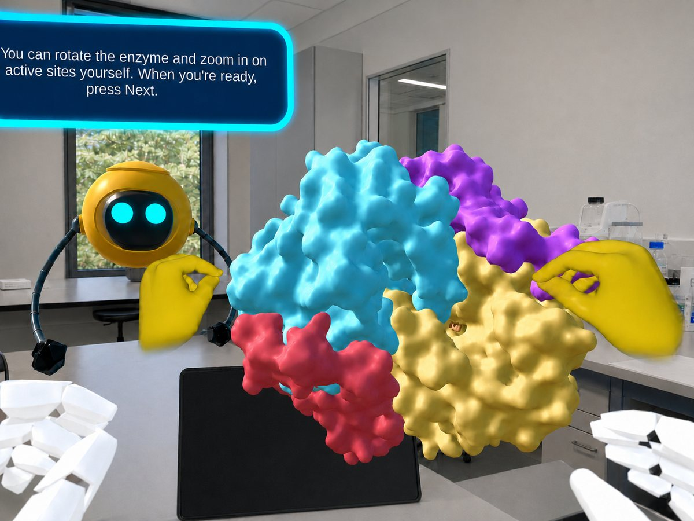
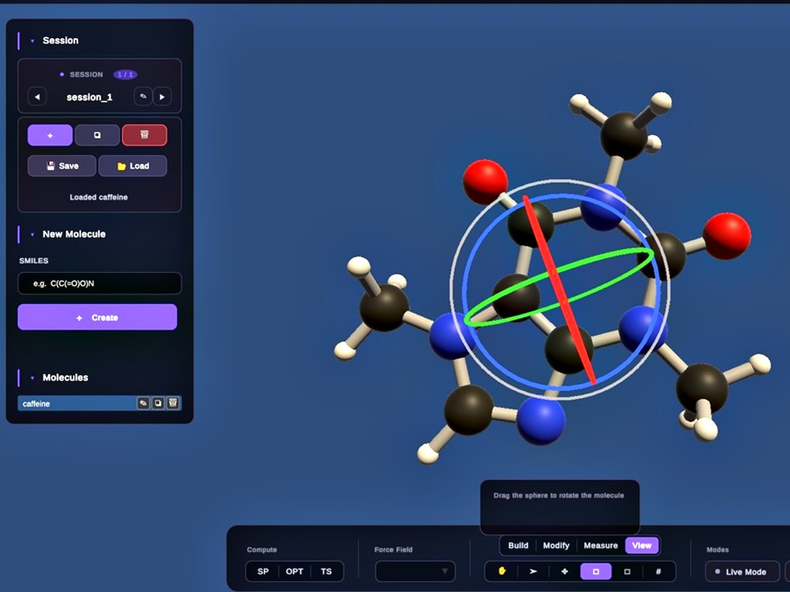

ИНТЕРАКТИВНОЕ ПО
ДЛЯ НАУКИ И ИНЖЕНЕРИИ
Мы создаём ПО для XR, мобильных устройств и ПК, которое превращает сложную научную и инженерную работу в понятные, интуитивные решения, от идеи до внедрения.
XR / VR / AR
Симуляции, лаборатории и обучающие сценарии в VR, AR и MR, с управлением руками, жестами и контроллерами, адаптированным под пользователя и рабочую среду. Создано на Meta Quest 3.
ПОДРОБНЕЕ О XR →МОБАЙЛ
Мобильные приложения и вспомогательные AR-инструменты для полевой работы, для iOS и Android, на основе опыта основателя с коммерческими продуктами, которыми пользовались миллионы.
ПОДРОБНЕЕ О МОБАЙЛ →PC
Сложные интерактивные системы реального времени: исследовательские инструменты, симуляции и производительное 3D-ПО, с научными вычислениями и машинным обучением.
ПОДРОБНЕЕ О PC →ОТ ИДЕИ ДО ГОТОВОГО ПРОДУКТА
КОНЦЕПЦИЯ И ДИЗАЙН
От идей до убедительных концепций и визуального повествования.
РАЗРАБОТКА
Разработка от начала до конца, стабильная и модульная, которую легко расширять без переделки с нуля.
3D-ГРАФИКА И АНИМАЦИЯ
Высококачественные 3D-объекты, анимации и эффекты, оживляющие миры.
ОПТИМИЗАЦИЯ
Подход, ориентированный на производительность, для плавной работы на всех платформах.
ПОДДЕРЖКА И СОПРОВОЖДЕНИЕ
Постоянная поддержка и обновления в реальном времени для развития вашего приложения.
Технологии


ИЗБРАННЫЕ РАБОТЫ
Проекты под руководством основателя, от идеи до внедрения под ключ.
Учебная модель ферментативной лаборатории

Задача. В лаборатории биохимии студенты проводят эксперимент с реактором ферментов, но никогда не видят молекулярный мир, стоящий за ним. Фермент остаётся невидимым, хиральность преподаётся по плоским схемам, а показания поляриметра меняются без ясной причины. Всё остаётся абстрактным.
Решение. Мы создали обучающий модуль дополненной реальности для Meta Quest 3, который помещает молекулярный мир прямо на реальный стол студента, без контроллеров и без предварительного опыта. Роби, дружелюбный двуязычный робот-инструктор, сопровождает студентов, пока они сравнивают молекулы руками, вращают фермент, наблюдают реакцию шаг за шагом и даже стреляют поляризованным светом по молекулам, чтобы увидеть, как структура влияет на результат.
Результат. То, что было невидимым за лабораторным столом, становится осязаемым, каждое понятие строится через действие и выбор и напрямую связывается с данными, которые измеряют студенты. Преподаватель управляет темпом в реальном времени и получает мгновенную обратную связь о понимании. Создано и используется на факультете химической инженерии им. Вольфсона, Технион.
Иммерсивный VR-эксперимент по фугитивности

Задача. Как преподать абстрактное термодинамическое понятие, такое как фугитивность, целому классу одновременно, последовательно и безопасно, чтобы у каждого студента был одинаковый опыт?
Решение. Часовой эксперимент в виртуальной реальности, где студенты сами управляют лабораторным оборудованием, нагревают вещество, двигают поршень, открывают клапаны и считывают давление под руководством виртуального инструктора. До 12 устройств одновременно, каждое связано с планшетом преподавателя.
Результат. Весь класс проходит один и тот же точный и безопасный опыт вместе, преподаватели видят, где находится каждая группа, и собирают данные занятия, а абстрактное понятие превращается в осязаемый, управляемый эксперимент. Используется в курсе «Термодинамика Б» в Технионе.
Научный инструмент молекулярных исследований с машинным обучением

Задача. Исследователям нужно было создавать и изменять молекулярные структуры и сразу видеть результат, вместо того чтобы ждать по одному расчёту за раз и гадать, что изменится.
Решение. Мы создали интерактивный 3D-инструмент, в котором исследователь строит и редактирует молекулу, а модель машинного обучения быстро выполняет для неё научный расчёт и возвращает результат на модель перед ним, не выходя из процесса.
Результат. Исследование становится быстрым, наглядным и интуитивным, а модель машинного обучения позволяет выполнять расчёты намного быстрее традиционного подхода. Создано для факультета химической инженерии им. Вольфсона в Технионе.
Физический VR-класс на Meta Quest

“Meta Quest 3” by Elin, CC BY 4.0
Задача. Технион хотел класс, который надёжно запускает иммерсивную виртуальную реальность сразу для многих групп, без того чтобы персонал терял каждый урок на технические неполадки.
Решение. Мы организовали класс от начала до конца: от выбора оборудования и планировки пространства до установки, тестирования и рабочих процессов преподавателей. До 12 гарнитур Meta Quest 3, каждая со своим планшетом.
Результат. Класс, который просто работает, где преподаватели следят за каждой группой, помогают студентам и собирают данные на каждом занятии. Технология остаётся на заднем плане, а преподавание в центре внимания.
О НАС
Десять лет разработки 3D в реальном времени
Red Crown Interactive это студия разработки под руководством Юлии Павловой, инженера-программиста, специализирующегося на 3D реального времени, с более чем десятилетним опытом в XR, медицинских технологиях, играх и обороне. В зависимости от задач проекта студия собирает и ведёт команды разработки, 3D и дизайна, так что каждый проект создаётся как единое целое, от кода до визуала. Мы строим системы, где точность, стабильность и производительность важны не меньше, чем впечатление.
ВОПРОСЫ И ОТВЕТЫ
Сколько стоит разработка приложения VR или смешанной реальности?
Стоимость зависит от объёма, платформы и сложности контента. Мы начинаем с короткого разговора, чтобы понять ваши задачи, и даём понятную, прозрачную оценку ещё до старта, без сюрпризов.
Сколько времени занимает разработка такого приложения?
Зависит от объёма. Отдельный модуль может выйти за недели, а более крупная система дольше. Мы заранее определяем цели и этапы, чтобы у вас всегда была ясная картина темпа.
Для каких платформ вы разрабатываете?
Мы разрабатываем для Meta Quest 3, iOS и Android, ПК и WebGL, в основном на Unity. Вместе выберем платформу, подходящую вашей аудитории и целям.
Работаете ли вы с университетами и научными институтами?
Да. Значительная часть нашей работы для академических и научных учреждений, включая Технион. Нам близки научный и инженерный контент, требования безопасности и многопользовательские классы.
Кто на самом деле создаёт проект?
Проект ведёт и создаёт основатель, старший инженер и дизайнер, от начала до конца, поэтому вы общаетесь напрямую с тем, кто и планирует, и создаёт, без посредников. Для крупных проектов может быть привлечена тщательно отобранная профессиональная команда высокого уровня, работающая под её руководством и контролем, чтобы качество сохранялось на всём пути.
Можно ли начать с малого или только с первоначальной идеи?
Конечно. Даже первоначальная идея это отличное начало. Можно начать с малого, с пилота или прототипа, и уверенно расти дальше.
ЕСТЬ СЛОЖНАЯ ИДЕЯ?
ДАВАЙТЕ ВОПЛОТИМ ЕЁ.
Расскажите, что вы хотите создать, даже если это пока черновая идея. Вы будете общаться напрямую с тем, кто её и создаёт, и обычно мы отвечаем в течение одного рабочего дня.